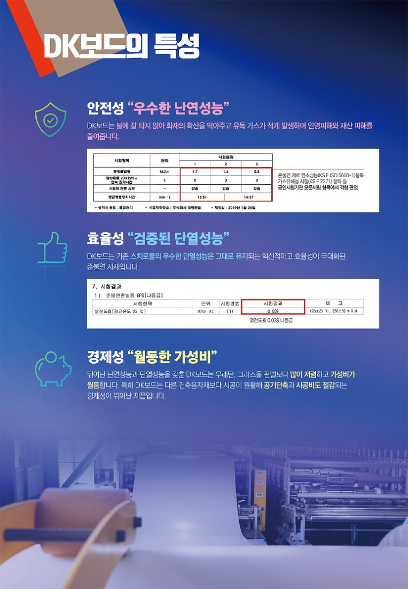

안전성 "우수한 난연성능"
DK보드는 불에 잘 타지 않아 화재의 확산을 막아주고 유독 가스가 적게 발생하며 인명피해와 재산 피해를 줄여줍니다.
효율성 "검증된 단열성능"
DK보드는 기존 스치로폴의 우수한 단열성능은 그대로 유지되는 혁신적이고 효율성이 극대화된 준불연 자재입니다.
경제성 "월등한 가성비"
뛰어난 난연성능과 단열성능을 갖춘 DK보드는 우레탄, 그라스울 판넬보다 많이 저렴하고 가성비가 월등합니다. 특히 DK보드는 다른 건축용자재보다 시공이 원활해 공기단축과 시공비도 절감되는 경제성이 뛰어난 제품입니다.
#조립식 #광주 #샌드위치 #전북 #전남 #판넬 #드라이비트 #징크 #대통령상 #준불연 #국가품질경영대회 #전국품질분임조경진대회 #대광판넬 #대광스치로폴 #한갑호 #라인메탈 #DK보드 #디케이보드 #V50 #복합자재